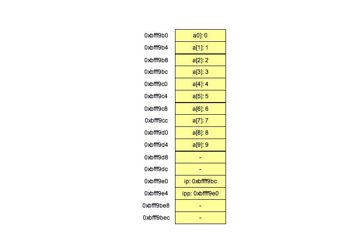
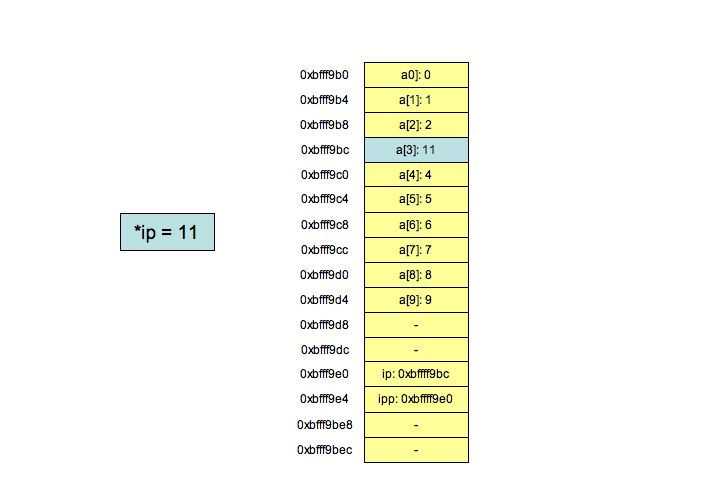
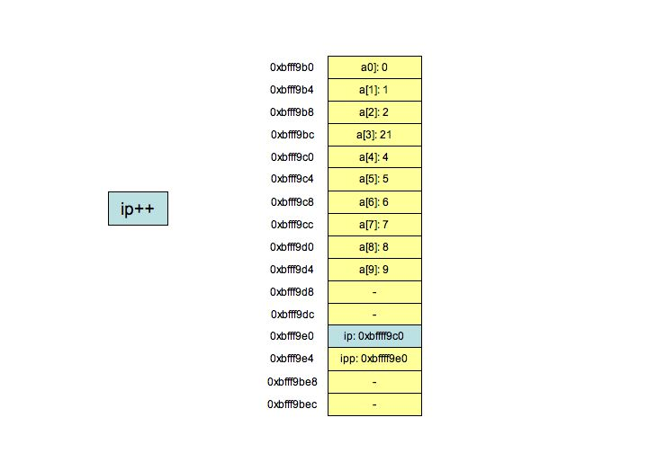
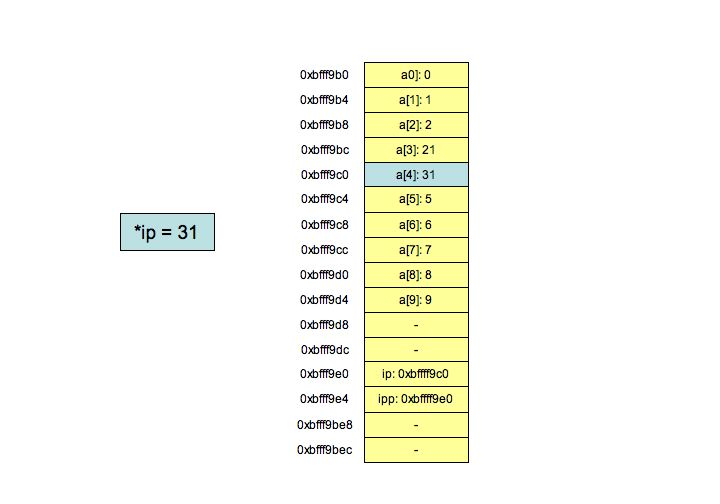

UNIX> p1 < inputfile 4 3 5 3 72 UNIX> |
What does it do? If the third word is a number, it prints the number. The only lines that are not numbers are the "Davis Love III", "# Comment" and "E. Power Biggs" lines.
If you forgot newlines, you lost two points.
UNIX> p2 < inputfile T Character zero of "Tiger" i Character one of "Singh" 5 Character 2%1=0 of "5" 2 Character 3%2=1 of "72" # Character 4%1=0 of "#" (word 4%2=0) 9 Character 5%2=1 of "69" e Character 6%4=2 of "Cher" (word 6%6=0) g Character 7%5=2 of "Biggs" (word7%5=2) UNIX> |
This program is a little sloppy -- i and j are always the line number (zero-indexed). You pick the i-th word (modulo the number of fields), and the j-th character (modulo the string length), and print it out with a newline.
Tiger (Prepend) Tiger Vijay (Append) Phil Tiger Vijay (Prepend) Phil Tiger Vijay Davis (Append) # Phil Tiger Vijay Davis (Prepend) # Phil Tiger Vijay Davis Sergio (Append) Cher # Phil Tiger Vijay Davis Sergio (Prepend) Cher # Phil Tiger Vijay Davis Sergio E. (Append)And the output is:
UNIX> p3 < inputfile Cher # Phil Tiger Vijay Davis Sergio E. UNIX> |
| s = "Tiger" | q = | i=0 -- Push onto stack |
| s = "Tiger" | q = "Vijay" | i=1 -- Enqueue onto queue |
| s = "Phil", "Tiger" | q = "Vijay" | i=0 -- Push onto stack |
| s = "Phil", "Tiger" | q = "Vijay", "Davis" | i=1 -- Enqueue onto queue |
| s = "#", "Phil", "Tiger" | q = "Vijay", "Davis" | i=0 -- Push onto stack |
| s = "#", "Phil", "Tiger" | q = "Vijay", "Davis", "Sergio" | i=1 -- Enqueue onto queue |
| s = "Cher", "#", "Phil", "Tiger" | q = "Vijay", "Davis", "Sergio" | i=0 -- Push onto stack |
| s = "Cher", "#", "Phil", "Tiger" | q = "Vijay", "Davis", "Sergio", "E." | i=1 -- Enqueue onto queue |
So the output is:
UNIX> p4 < inputfile Cher # Phil Tiger Vijay Davis Sergio E. UNIX> |
So, the output of the program is:
UNIX> p5 0xbffff9b0 0xbffff9e0 0xbffff9e4 0 1 2 21 41 5 6 7 8 9 0xbffff9c0 0xbffff9e0 0xbffff9b0 0x1 UNIX> |
Pictorally, here is the state of the system after executing "ipp = &ip." This is what you know from the first line of output:
 |
The following pictures will show the next few lines of the program, and their effect on memory. From that you can generate the output:
 |
 |
 |
The only subletly is whether to handle a zero value of n. I said that all input files are legal, but is one with a zero value of n legal? You had to consider the problem, and either handle it in your code, or specify to me that you didn't consider such files legal.
Here is the answer (digest.c).
#include < stdio.h >
#include "fields.h"
main()
{
IS is;
double n, score;
double total;
int nfield, i;
is = new_inputstruct(NULL);
while (get_line(is) >= 0) {
/* Check for comments */
if (is->text1[0] != '#') {
/* Find the field that holds n. Note that this loop both does
that and has n set when it is done. */
for (nfield = 0; sscanf(is->fields[nfield], "%lf", &n) == 0; nfield++) ;
/* Now scan in the scores and add them to the total */
total = 0;
for (i = nfield+1; i < is->NF; i++) {
sscanf(is->fields[i], "%lf", &score);
total += score;
}
/* Print out the average. This assumes that n=0 is an illegal value */
printf("%10.4lf", total/n);
/* Finally, print out the name and the newline */
for (i = 0; i < nfield; i++) printf(" %s", is->fields[i]);
printf("\n");
}
}
}
|